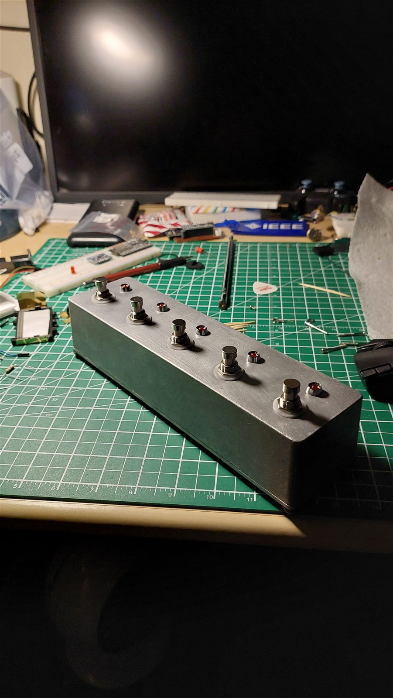
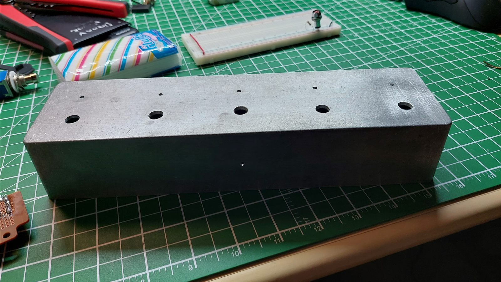
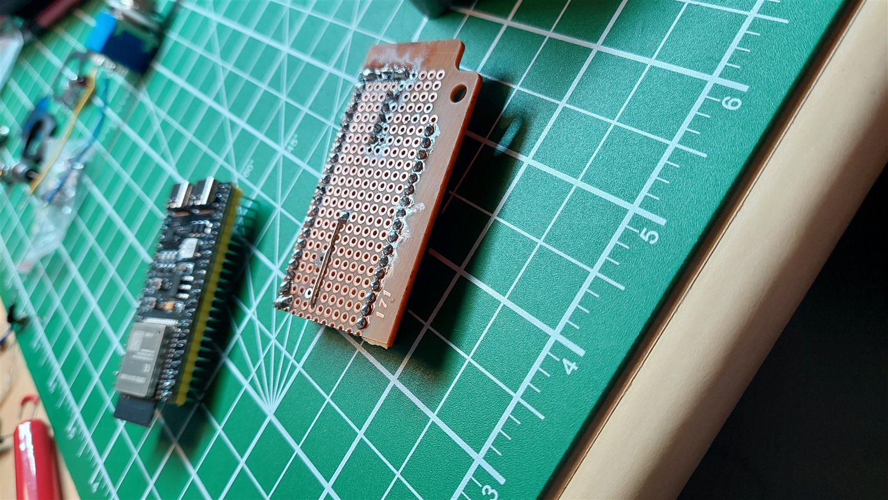
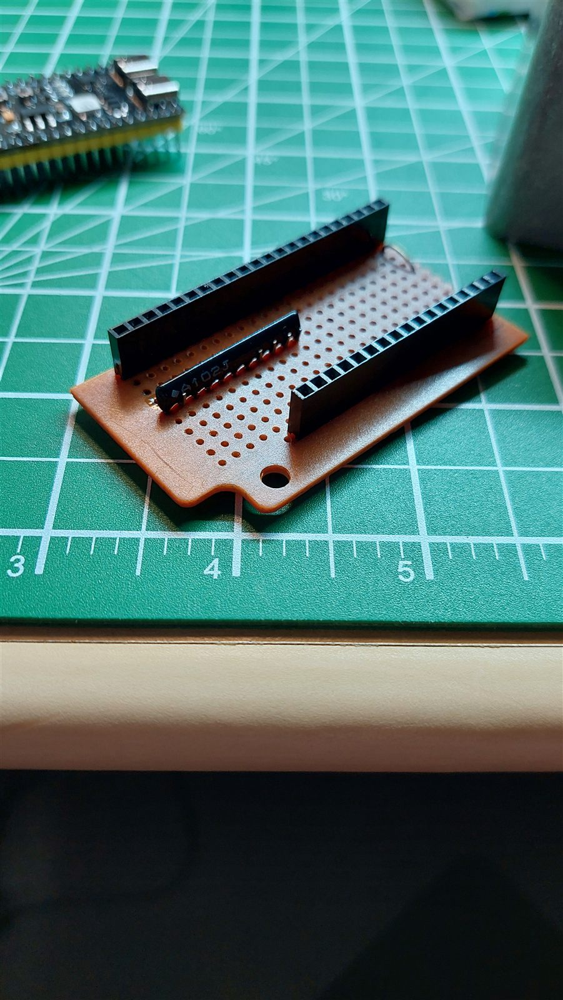
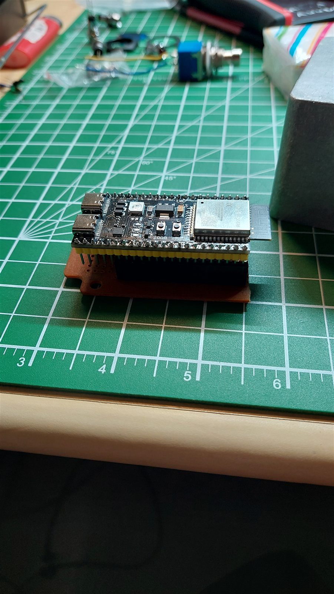

ESP32-S3 MIDI Pedalboard





| Board | ESP32-S3 DevKitC-1 (N16R8) |
|---|---|
| Inputs | 5 footswitches, 5 status LEDs |
| Connection | USB MIDI (class compliant, no drivers) |
| Firmware | C++, Arduino on PlatformIO, TinyUSB |
| Design | Enclosure drawing, KiCad schematic |
Overview
A five-switch foot controller for playing guitar with a computer. It plugs in over USB and shows up as a MIDI device called "MIDI Pedalboard" in Windows and in a DAW, so each footswitch can control recording, playback, or effects without taking my hands off the guitar.
Hardware
The controller is built around an ESP32-S3, which has native USB. Each footswitch pulls a GPIO pin to 3.3 V using the chip's internal pull-downs, and each has an LED with a 220 Ω resistor to show whether it is on. I drew up the enclosure in millimetres, including the hole sizes for the footswitches, and built it in an aluminum box with the board on a removable perfboard carrier.
Firmware
The firmware uses the TinyUSB stack built into the ESP32 core with a custom USB MIDI descriptor, so no external libraries are needed. Each switch works as a latch: a press toggles it on or off, sends a Control Change message (CC 20–24 on channel 1, value 127 or 0), and updates its LED. Presses are debounced at 50 ms. Because the board only needs to read switches, I dropped the CPU to 40 MHz and turned off Wi-Fi and Bluetooth.
Using It
In Waveform Free I used MIDI learn to map the switches to transport controls. I also mapped one switch to the space bar with MidiKey2Key, so it can start and stop playback in any program.
Next Steps
The schematic is done in KiCad and I have started laying out a custom PCB to replace the perfboard.